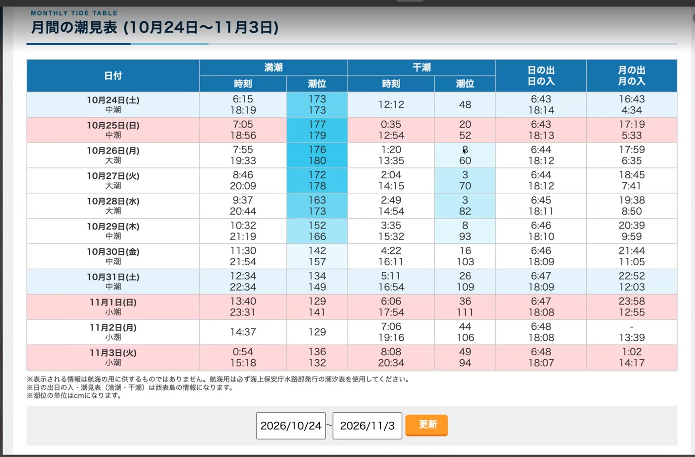
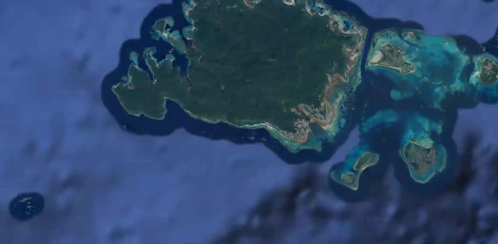
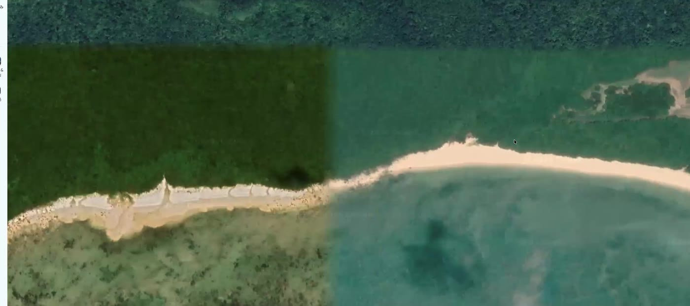
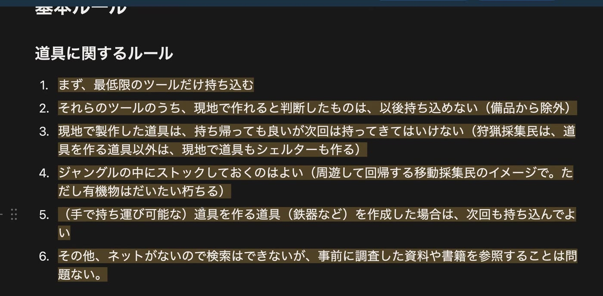
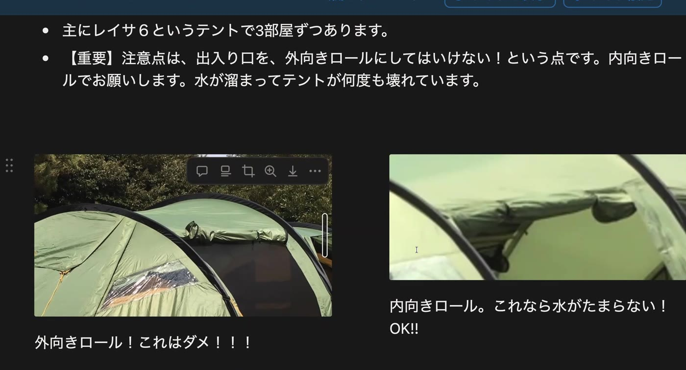

OVERVIEW概要
10月のジャングルギャザリングに参加する人たちが、出発前にZoomで集まった。目的は2つ。①フィールドがどんな場所で、そこで何ができるのかを事前にイメージしておくこと、そして②お互いを事前に知っておくこと。日常とまったく違う環境に、知らない人たちと入っていく。現地で何日も自己紹介を続けて戸惑っているのはもったいない。「初めて会うけれど、あなたが◯◯さんですね」という状態でフィールドに立てるように、という会である。
前半は参加者全員の自己紹介と、現地スタッフ（アテルイ・平野朗）からの話。とくに6月の回で起きた海の事故を受けて、今回から海の安全基準を明確にしたことが伝えられた。後半は七沢がジャングルブック（参加マニュアル）をもとに、西表島とキャンプ場の成り立ち、海の構造、持ち物、道具のルール、ベースキャンプでの暮らし方を説明し、最後に質疑を行った。
ジャングルブック（参加マニュアル）：https://snow-cut-046.notion.site/jungle-book
How to make jungle life（現地でやれること）：https://snow-cut-046.notion.site/make-jungle-life
| 00:00 | はじめに──今日の目的（フィールドのイメージと、お互いを知ること） |
| 03:16 | 参加者の自己紹介 |
| 15:34 | スタッフ・アテルイ：海の安全基準と、現地でやりたいこと |
| 30:58 | スタッフ・平野朗：西表島は「人がまだ強い」島 |
| 41:21 | スケジュール表の見方 |
| 43:14 | 潮見表──今回は大潮、夜中の「イザリ」に行こう |
| 46:48 | 台風の動向（10/16時点） |
| 56:52 | 西表島とキャンプ場の成り立ち |
| 59:00 | 海の構造──リーフと「流されたときの戻り方」 |
| 1:00:52 | フィールド──浜・川で獲れるもの |
| 1:02:18 | 「地の果て」のキャンプ場の来歴 |
| 1:06:07 | ジャングルブック：ジャングルギャザリングとは何か |
| 1:08:28 | 持ち物・スマホと時計を見ない・道具のルール |
| 1:14:30 | 現地の設備・調理器具・持ち込める調味料 |
| 1:18:24 | 日々のルーティンとロープワーク |
| 1:19:55 | 現地でやれること（How to make jungle life） |
| 1:27:24 | ベースキャンプのチュートリアル |
| 1:37:00 | 質疑：道具の扱い方 |
| 1:42:10 | 質疑：服装・寝袋・テント持参・お酒・海に携帯を持っていくか |
| 1:52:17 | 6月の事故をふり返る |
| 1:55:42 | まとめ・フェリーと迎え・台風時の動き方 |
CONTENTS内容
はじめに──事前に「行ったことがある」状態をつくる00:00–03:16
フィールドに着いたとき、行ったことはないのに「もう分かっている」状態になっていることが、とても大事だと七沢は言う。かつて事前の顔合わせをしっかりやらなかった頃は、現地でずっとお互いに自己紹介をしている、ということがよく起きた。そこで今回も、最初にしっかり自己紹介をし、そのあとフィールドで何ができるのかをイメージしてもらう、という2本立てで進められた。
参加者の自己紹介03:16–
なお自己紹介の中で出た質問から、ひとつルールの確認があった。麹の持ち込みについては、「米以外は持ち込まない」というルールに大きく影響するため、大豆などは持ち込まず、麹菌から麹をつくって魚と合わせる、という形ならOKということになった。七沢からは、3月に現地のシークヮーサーと黒糖で仕込んだものが酢になり、評判がよかったという話も出た。
スタッフ・アテルイ：海の安全基準15:34–30:58
アテルイは西表島でツアーガイドとして働き、以前は宮古島でシュノーケルやカヤック、夜の生き物探しのツアーをしていた。ギャザリングへの参加は6回目、昨年からスタッフを務めている。
6月の回では、台風の接近時に数人が海に入り、スタッフがそれを把握していないなかで文字どおり死にかける事故が起きた。装備も失われ、けがも負った。二度と起こさないために、今回から次の基準を決めたという。
海の安全基準（今回から）
- 風速が原則10m以上の日は、全員、海に行かない。
- 泳ぐときは必ずバディ（2人以上）で。1人では行かない。
- 海に行くときは出発前に必ずスタッフに一声かける。泳ぐエリアと、だいたいの時間（1時間、2時間など）を伝える。
- 事故が起きたときの対応フローチャート（意識がある場合／ない場合・118番／119番）を、東屋の黒板に貼っておく。それを見ながら動く。
そのうえで、シュノーケリングや魚突きは「バンバンやっていきたい」。道具づくりは最初に必ずやる。現地には器も箸もない状態から始まるので、竹を切り、ヤシの仲間のマーニでたわしやロープをつくる。今回は日程に余裕があるので、鉄を叩いてナイフや銛までつくりたい、とのこと。
スタッフ・平野朗：西表島は「人がまだ強い」島30:58–
平野朗は七沢と20年以上前に西表島で出会い、ギャザリングを最初から一緒にやってきた。淡路島で農業と狩猟（イノシシ、魚、養鶏、ミツバチ）を営む。
泊まるのはキャンプ場で、管理人が几帳面な方なので、芝生のよく整った、意外と居心地のいい場所。そこから一歩出るとジャングルで、ビーチも歩いてすぐ。人の住む場所と森との境界がはっきりある。淡路島などでは里山の境界があいまいになり、イノシシが入り込んで畑が荒らされ、人間が負けつつある地域が増えている。それに対して西表島は、ほとんどがジャングルなのに人がまだ強い。守るだけでなく、自分たちで獲る。イノシシも、海も、機械のメンテナンスもひととおりできる。それが西表島の特徴のひとつだという。
「僕らはガイドというより、道具のひとつとして使ってほしい」。何かしたいことがないと、なんとなく終わってしまう。引き出しをノックするように、どんどん質問してほしい、と。古武術などのボディワークにも興味があれば、一緒にやろうという呼びかけもあった。
スケジュール表と潮見表41:21–46:48
参加者のスケジュール表は、フェリーの時刻が「乗る日の前日のセル」に書いてある（「安栄13:00」「八重山7:30」など）。宿泊日の◯を数えるための都合なので、時刻が書いてあるセルの隣の日が乗る日と読んでほしい。

海のことを判断するうえで、潮見表はとても重要。潮が引いていくときは、流されやすい。今回の会期は前半が大潮にあたり、夜中（1時〜2時半ごろ）に大きく引く。潮位が数cmになると、海に水がないような状態になり、潮だまりで網を使ってエビなどが獲れる。潜らなくてもできる、夜の漁「イザリ」。しかも満月期の大潮なので、曇っていなければ明るい。「晴れて満月で、引いていて、夜中に起きて……最高なので、前半はぜひイザリに行ってください」。10月の夜の海は穏やかで月がきれいで、本当に幻想的になることがある。昼の干潮も潮位50〜70cmまで引くので、昼間も潜りやすい。
台風の動向（10/16時点）46:48–56:52
説明会の途中で、台風が接近しつつあることが話題になった。予報サイトによって進路の見立てが分かれ、会期のはじめ（10/23〜25ごろ）にフェリーが止まる可能性がある。フェリーは風向きにもよるが、風速10mぐらいで止まる。設営を前倒しにするなど、キャンプ場オーナーと相談しながら対応する。10月後半に台風が来るのは3年連続だという。
西表島とキャンプ場の成り立ち56:52–59:00

西表島は戦前までマラリアの影響で開発が進まなかった。戦後にマラリアが根絶され、波照間島や新城島などから開拓民が入ってきた。島の南東部の平地に田んぼを開いたのはこの時代で、キャンプ場のオーナーも、新城島出身の父をもつ開拓二世。開拓のサバイバルのような少年時代を過ごしてきたので、ギャザリングの様子を見て懐かしがり、いろいろ教えてくれる。
フェリーは大原港に着く。その先には大原・大富の2つの集落しかなく、そこから農道をずっと進んだ先、島の南の端に南風見田（はいみた）のキャンプ場がある。ここがベースキャンプ。海は見えないが、歩いて5分ほどで浜に出る。
海の構造──流されたときの戻り方59:00–1:00:52

サンゴ礁の島らしく、浅瀬がずっと続いたあと、急にドンと深くなる。浅いとはいえ、深いところやサンゴのでこぼこもある。大潮で潮位が数cmになると手前はほとんど水がなくなり、プールのような潮だまりにエビや、この季節ならサヨリ（虫網ですくえる）がいる。
リーフには切れ込み（ボーラ口）があり、潮が引くとそこから川のように水が外へ流れ出る。魚が獲りやすいので行きたくなる場所だが、とくに大潮の引き潮では強く流される。ただ、流されてもリーフの外の外海に出てしまえば流れはなくなるので、慌てずに流されてから、横に移動して戻ればよい。6月は波が強すぎて、戻ろうとしても上がれなかった。波が強いときは決して出ない。判断はアテルイがする。
フィールド──浜と川で獲れるもの1:00:52–1:02:18
- 浜：ユウレイガニ（けっこうおいしい）
- キャンプ場近くの川：テナガエビがかなりいる。夜は目が光るので獲りやすく、10匹ほど獲れることも。仕掛けをかければオオウナギがかかることもある。仕掛けはフィールドにはあまりないので、編んでもいいし、持って行ってもよい
「地の果て」のキャンプ場1:02:18–1:06:07
このキャンプ場は、ファミリーキャンプ場を想像するとまったく違う。七沢が24歳で初めて来た20数年前、インターネットもない時代に聞いたのは「南風見田の浜に寄せ人やヒッピーがいっぱいキャンプしている」という話だけだった。島の周回道路はこの先で途切れ、島の半分は未開拓のまま。探検部の聖地でもあり、アテルイと出会ったのも、彼が大学探検部の部長として10人ほどを引き連れ、島を縦断してこのキャンプ場に現れたときだったという。
かつてはジャングルの中に洗濯物が干してあるような「住んでいる」キャンパーがたくさんいたが、取り締まりが厳しくなって追い出され、そうした人たちのために島の人がつくったのがこのキャンプ場である。地の果てで探検するのが好きな人のための場所で、インフラは基本的に何もない。ただ山の水が引いてあり、それをオーナーが沈殿ろ過しているので、沸かせば飲める水がある。
ジャングルギャザリングとは何か1:06:07–1:08:28
2年ほど前から掲げているテーマは、「各々がフィールドを探索し、身体で感じたことをもとに、実際に手を動かし、その場にあるもので工夫して暮らす──狩猟採集の仮暮らし」。与えられた何かをこなす場ではない。山梨で行っている1泊の社会人向けプログラムなら「火起こしをしましょう」「黒曜石で肉を切りましょう」とやるが、ジャングルギャザリングはそうではない。職人タイプのスタッフがいるだけのフィールドに、ただ佇む。そこから自分で探索し、道具を見て、人と話し、感じたことをもとに「これをやりたい」と手を動かしていくうちに、生きることが成り立っていく。
やりたいことを1つか2つ、事前にはっきり立てておくと充実する傾向がある。メインタープにはツールや本があるので、周囲と相談しながら進める。動植物の採集は、法律と島の人のルールに従う。
持ち物・スマホと時計・道具のルール1:08:28–1:14:30
- ヘッドライトとサンダルは必須（靴は蒸れて暑い）。あとはアウトドアの格好で
- 海に入る人は長袖のラッシュガードとレギンス（サンゴで切れるので必ず）、海靴（イザリでもサンダルより海靴のほうがいい）
- シュノーケルマスク・フィン・ウェットスーツは現地にある程度の数がある。10月はウェットなしだと1時間ほどが限界。浅瀬で30分ほど潜るぐらいならラッシュガードとレギンスで十分
- スマホと時計は見ない。「何時」という時間概念が発生しないように、迎えなども「◯時間後」と言う。時間もスマホもない中で過ごすことが、集中力や注意力、意識のあり方を変える。写真を撮りたい人はカメラ持参がおすすめ

道具は、最低限のものだけを持ち込み、現地で作れると判断したものは以後持ち込まない。そのため調理器具はどんどんなくなり、包丁はアテルイが鍛造したもの、切り出しナイフも自作のものを使っている。斧などはさすがに市販品。現地で作った道具は持ち帰ってもよいが、次回は持ち込まない──狩猟採集民の暮らしを真似ているから。ただし鉄器など「道具を作る道具」は持ち込んでよく、ジャングルの中へのストック（周遊して戻ってくる移動採集民のイメージ）もOK。3月に浜のココナッツをひたすら割ってつくったお椀が、たくさん残っているはずだ。
現地にはネットがないので検索もAIもできない。作りたいもの・獲りたいものがあれば、事前に調べてプリントアウトやメモにして持っていくのがとてもいい。
設備・調理器具・持ち込める調味料1:14:30–1:18:24
東屋には電源とライトがあり、晴れていればソーラーパネルでモバイルバッテリーの充電もできる（曇りが続くとバッテリーが空になるので注意）。狩猟採集系の道具、銛、ダッチオーブンやスキレット、スライサー・ボウル・ザル・網、塩を炊く鍋、最小限のクーラーボックスがある。イノシシが獲れたときは、燻したり煮込んだりしてなるべくクーラーボックスを使わずに保存する。小さな石臼があるので、米を挽けば粉になり、フライもつくれる。
持ち込む食料は米だけだが、現状は醤油・酢・黒糖・米油・オリーブオイルの持ち込みをありにしている。山梨のプログラムでは調味料は塩だけ。七沢は3月に3週間滞在する予定で、そのとき調味料をかなり開発し、醤油などの持ち込みも次の3月で終わりにしたい、と考えている。救急セットはあり、車で10分のところに診療所がある。
日々のルーティンとロープワーク1:18:24–1:19:55
薪割り、火起こし、魚をさばく、採集、狩猟、道具づくり、料理、皿洗い、風呂沸かし、入浴、火を囲んでの語り。ほとんどこれで日が暮れる。
強くすすめられたのがロープワーク。巻き結び・自在結び・もやい結びの3つがあれば、タープを張るのも紐を固定するのも、たいていのことができる。出発前に家で練習しておくのがおすすめ。
現地でやれること1:19:55–1:27:24
ジャングルブックの「How to make jungle life」（https://snow-cut-046.notion.site/make-jungle-life）には、塩の作り方、センダングサのジェノベーゼソース、地面に穴を掘って焼いた石で蒸す「石蒸し」など、これまでの知恵が膨大に書かれている。事前に読んでおくとよい。
- 投網：10月は投網の季節。浅瀬に魚の群れが入ってくる。キャンプ場で何回も練習しないと最初はできないが、入れば何百匹。小魚はナンプラーやアンチョビにもなるし、揚げてもおいしい
- イザリ、ウナギの仕掛け、ユウレイガニ、サヨリすくい、浜からの釣り
- イノシシが獲れたら解体の手伝い
- 場内の採集：パパイヤ、シークヮーサー、ニラ、サツマイモ、マーニ、レモングラス。場外にもいろいろあり、キクラゲも探せば見つかる。シダ類、オオタニワタリ、ヘゴ。畑ではキャッサバがそろそろ
- 今年はシークヮーサーが島全体で不作
- 平野朗によるボディワーク。フィールドを探索して感じたことから何かをつくるとき、感じるのは身体。その身体のあり方を整える
ベースキャンプのチュートリアル1:27:24–1:37:00
- 東屋：いろりがある。すぐ散らかるのでこまめに整理する。台（テーブルになる）の上には靴で足を乗せない
- 水場：右の2つは沈殿ろ過した水（沸かして飲む）、左端は山の水が直接出るので洗い物用
- 洗い物：マーニのたわしと灰（アルカリなので洗剤の代わり）で洗う。ダッチオーブンは金属たわしでこすると被膜が剥げ、濡れたまま放置すると錆びる。マーニでこすったあと、火にかけて水気を飛ばす
- ゴミ：分別がとても細かい。流しの下の段ボールに入れておけばスタッフが分別する。生ゴミはトイレ付近のコンポストへ
- ハエ対策：魚は風呂の隣のさばき場でさばく。流しで内臓を扱ったり生ゴミを置きっぱなしにしたりすると、ハエが覚えて大量に来て、出ていかなくなる
- 東屋の隣のビニールハウスに、シュノーケル・ウェットスーツ・重りなど海の道具や寝袋が置いてある
- トイレは暗いのでランタンがある。消し忘れに注意
- ドラム缶風呂が2つ（お湯と水で冷温浴）。蓋をすると翌朝まで温かい。夜のイザリで冷えて帰ってきてから入るのは最高

テントの入口は「内向きロール」で
宿泊用は3部屋とれるかまぼこ型のテント。入口を外向きに巻くと雨水がたまり、ポールが折れる。雨は突然降るので、必ず内向きに巻く。洗濯物を干すときは、もやい結び（または巻き結び）で片側を固定し、もう片側を自在結びで締めてロープを張る。ロープはスタッフに聞いて借りる。
質疑：道具の扱い方1:37:00–1:42:10
平野朗から、道具の扱いについての話。海の魚は、道具がなければほとんど獲れない。無人島に一人で来たつもりで、この道具がなければ死ぬ、という気持ちで扱ってほしい。
- 刃物は刃物鋼が多く、家庭のものよりすぐ錆びる。使ったらきれいにして拭き、乾いたところに置く。一人ひとりがやらないと、次の人が困る
- マスク・フィンなどのプラスチック製品は直射日光に弱い。癖がつかないように置く。砂ひとつ入っても水が入ってくる
- 1回では何ともなくても、何回も繰り返すうちに使い物にならなくなる。「道具は恋人のように」扱う
- ハエは一度いつくと出ていかない。野生動物を見ていると、みんなとてもきれい好きだ
七沢は、道具を大切にするのは深くて難しいことだと受けて、こう語った。「道具」は「道に備える」と書く。人が生きる道、何かを極める道に備えるもの。目的のための手段にすぎないと言われるけれど、それはまったく違っていて、道具こそが私たちの人生を形づくる。人生をかけて向き合うテーマであり、スタッフの姿を見ていると、それが見えてくるはずだ、と。
質疑：服装・寝袋・テント・お酒・携帯1:42:10–1:52:17
Q. 服装はどのくらい？ 寒い？ 暑い？
A. 10月はだいたい半袖半ズボンで、夜にちょっと羽織るぐらい（本州の初夏〜夏の感覚）。ただ、たまたま寒いときがあるので、そのときは行きに着てきた服を着る。寝袋は数があるので、寒ければビニールハウスから借りる。薄い寝袋1枚だと少し寒いので、厚いものか2枚重ねがいい。ジャングルブックの「ステップ」のページにある過去の写真を見ると、みんなの格好が分かる。
Q. テントを自分で持ってくる人はいる？ 持っていくといいことはある？
A. 狩猟採集民のように、すべての道具をバックパックで背負ってきて、フィールドで道具をつくりながら暮らすのが理想形とはされている。ただ快適なテントも寝袋もマットも現地にあるので、わざわざ持ってこなくてもいい。スタッフは自分のテントで寝ている。
Q. お酒は持って行っていい？
A. お酒は持ち込み品に入っておらず、現地では誰も飲んでいない（つくるのは時間がかかる）。現地には「お酒・コーヒー・時計・スマホ」がない。ただ強制ではないので、どうしても必要ならボトルに入れてテントで飲むぐらいはかまわない。スマホも安否確認などで必要な人は使っていい。普段あるものがない生活をすると面白いですよ、というのが標準。
Q. 海に出るとき、緊急連絡用に携帯を持っていったほうがいい？
A. 基本は持っていかないスタンス。携帯に頼って安全を確保しないといけないような海なら、行かないほうがいい。必ずバディで、アテルイの指導のもとで潜る。島には警察官が3人しかおらず、専属の消防職員もいない。遭難や事故があると、地元の人たちでつくる消防団が夜中でも呼び出されて対応する。携帯があるから大丈夫と山や海に入り、気軽に119番通報するのは、島の人たちにとって非常に迷惑なことでもある。
6月の事故をふり返る1:52:17–1:55:42
6月の事故では、台風が来る前にどうしても潜りたいという気持ちがあり、ベテランの島の漁師が先にリーフの外へ出ていたのを見て「あの人なら獲れるんだ、自分も」とついて行ってしまった。浅いリーフの中でも当日は流れがすごく、引き返そうとしたところで大きな波が来て、ちりぢりになった。一方で、同じ場にいたもう一人は途中で引き返していた。
「大丈夫かな、と思っているということは、大丈夫じゃないんですよね」。せっかく来たから潜りたい気持ちは誰にでもある。それでも、直感で危ないかもと思ったら、無理せず「行かない」と決断することが大切。基本はアテルイの指示に従う。
まとめ・フェリーと迎え・台風時の動き方1:55:42–2:02:13
- とにかく夜の海がすごい。立ち上げ（塩づくり・マーニのたわし・竹の器づくり）とイザリはとくにおすすめ。気候が一番いい時期で、投網にもいい季節
- フェリーの時間を確定して連絡し、そのフェリーに乗る。スタッフが港まで迎えに行く
- 現地は電波が入らないので、港に向かう途中で連絡を確認する。飛行機の遅れでそのフェリーに乗っていない、ということはよくあるので心配しなくていい。連絡はメッセンジャーグループに投げる。ただし自己都合での変更は困るので、どうしようもないときだけ
- 台風でフェリーが止まった場合は石垣島に泊まる可能性がある（2,000円台のドミトリーなどもある）。台風のなかで石垣でテント泊はしない。台風が過ぎてから入っても十分に滞在できる。出たとこ勝負でいこう
- 最後に平野朗から一言──「しっかり寝て、元気で来てください」
© Iriomote JUNGLE CLUB ／ Technel合同会社 ｜ 本まとめは説明会の録画をもとにAIが作成し、事務局が確認・編集しています。参加者のお名前・個人的な情報は掲載していません。